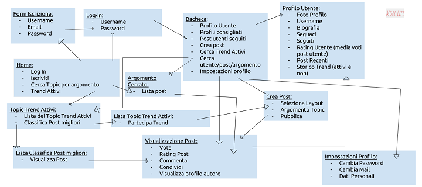

Nome del progetto:More Life
Repository del sito di presentazione progetto:https://github.com/SoNet-2017/MoreLife
Repository del prototipo (codice):https://github.com/SoNet-2017/MoreLife-code
| Matricola | Cognome | Nome | GitHub | |
|---|---|---|---|---|
| s244170 | Caruso | Giovanni Filippo | s244170@studenti.polito.it | gfcar |
| s244022 | Di Pietra | Irene | s244022@studenti.polito.it | IreDiPi |
Social Network con un taglio editoriale e giovanile, pensato per chi ama essere aggiornato sulle ultime tendenze. Indirizzato alle persone che vogliono poter fruire più contenuti informativi e/o mediali in un'unica piattaforma, con un'ottima indicizzazione. Il progetto vuole dare la possibilità agli utenti di conoscere nuove realtà in base alle proprie preferenze e poter ampliare i propri seguaci in base alla qualità dei post prodotti. Le parole-chiave del progetto sono: trendy, qualitativo ed esclusivo. Ogni utente potrà partecipare ai post "Trend", dire la sua su ogni evento (mondano, cinematografico, tecnologico, etc.) in arrivo e poter diventare un vero "Trender"!
Ci rivolgiamo prevalentemente ad utenti di età compresa tra i 18 e i 30 anni. Vi sono due categorie di utenti:l'utente appasionato di lifestyle, musica, tecnologia, moda, food, colui che vuole essere sempre aggiornato sulle nuove tendenze e personaggi/pagine pubbliche, come ad esempio testate giornalistiche, influencers e bloggers che vogliono farsi conoscere e diffondere le proprie idee.
Alessandro:
- Studente di Economia, fa parte del comitato di accoglienza ed orientamento dei nuovi studenti;
- Vive a Verona, originario del sud Italia;
- Aperto al dialogo, ama condividere le sue esperienze;
- Fanatico di Netflix.
Paola:
- Commessa, lavora in una boutique di vestiti;
- Vive a Milano, segue assiduamente la Milano Fashion Week e, da anni, non perde neanche un numero di "Vogue";
- Condivide quotidianamente i suoi look sui Social e ama dar consigli di stile alle sue amiche;
- Ama viaggiare e l'arte etnica.
Alessandro ha difficoltà ad entrare in contatto con persone con i suoi stessi interessi. Essendo un appassionato di serie TV, vorrebbe poter interagire in modo creativo e qualitativo con i propri seguaci condividendo le proprie opinioni a riguardo. Vorrebbe avere maggiore visibilità per far conoscere anche agli altri i propri interessi e gusti. Alessandro scopre More Life e inizia a scrivere articoli e recensioni sulle sue serie tv preferite: la possibilità di essere valutato da altri utenti con i suoi interessi lo sprona a scrivere sempre più post, con un'attenzione particolare ai dettagli.
Paola legge quotidianamente testate di moda e stile, scopre More Life tramite un banner pubblicitario ed incuriosita, si iscrive. Essendo nel periodo delle settimana della moda in tutto il mondo, viene attratta dai vari "Trend Attivi" relativi all'argomento ed inizia a pubblicare post sui vari look visti per le strade di Milano, Londra e Parigi. Grazie ai molteplici post diventa un utente con una valutazione personale di 2.7 e sta valutando di diventare un utente "Trender" per poter creare le proprie sfide.
Inserire una tabella in cui sono elencate (ad alto livello) TUTTE le funzionalità del vostro social network, anche quelle che non compariranno nel prototipo.
| Funzionalità complete | Descrizione |
|---|---|
| Topic "Trend" | Categoria (creati dal server Social) di post in cui verranno discussi i prossimi eventi (fashion week, fiere, Comicon, awards, uscita film, nuove aperture, etc.). I post degli utenti in tale categoria verranno classificati in base alle votazione ricevute, garantendo maggiore visibilità al post e all’autore del post. |
| Qualifica “Trender” | Gli utenti con i post più votati, ogni mese, avranno la qualifica “Trender” per tutto il mese successivo e avranno maggiore visibilità nelle ricerche di utente. |
| Tasto “New Trend” | Ricevuta la nomina “Trender”, l’utente potrà aprire dei topic “Trend” (scegliere l'evento della funzione topic "Trend"). |
| Format dei post variabile | Ci saranno varie tipologie di post ed ognuna avrà un format pre-impostato, pensato in base alle necessità dell'utente |
| Indicizzazione post tramite hashtag e categorie predefinite | Possibilità dell'utente di indicizzare i propri post tramite categorie specifiche generiche e poi per hashtag (per la larga diffusione). |
| Possibilità di valutare ogni post pubblicato da 1 a 3 stelle | Ogni utente potrà valutare i post degl altri utenti con una votazione compresa tra 1 a 3 stelle. |
| Possibilità di poter donare soldi all'autore del post | Tutti gli utenti potranno mettere donare (e quindi ricevere) soldi qualora un utente ritenga opportuno farlo. |
| Possibilità di mettere più post altrui in evidenza | Tutti gli utenti potranno mettere in evidenza alcuni post di altri utenti, creando una rassegna personalizzata. |
| Lunghezza MINIMA post | Ogni post dovrà avere una lunghezza minima. |
| Log In | Possibilità dell'utente ad entrare nell'area privata del sito e visualizzare a pieno i contenuti. |
| Possibilità di seguire gli altri utenti | Ogni utente potrà seguire il profilo degli altri utenti. |
Inserire una tabella in cui sono elencate SOLO le funzionalità del vostro social network (a basso livello) che COMPARIRANNO NEL PROTOTIPO. Inserire un riferimento alla funzionalità completa a cui fanno riferimento
Se vengono fatte delle semplificazioni inserirle in questa sezione, sotto la tabella.
| Funzionalità | Descrizione | Riferimento funzionalità completa | Da implementare SI/NO |
|---|---|---|---|
| Iscrizione | Possibilità di accedere ai contenuti esclusivi del social | Funzione Base | SI |
| Log In/Log Out | Possibilità di entrare/uscire dal profilo personale | Funzione Base | SI |
| Seguire/Non seguire utente | Possibilità di seguire/non seguire gli altri utenti e ricevere i relativi aggiornamenti | Funzione Base | SI |
| Ricerca utente | Ricerca utente iscritti | Funzione Base | SI |
| Ricerca categoria post | Ricerca post della categoria desiderata | Funzione Base | SI |
| Commentare post | Possibilità di commentare i post propri/altrui | Funzione Base | SI |
| Valutazione | Ogni utente può valutare i post da 1 a 3 stelle | Indicizzazione Qualitativa | SI |
| Visualizzazione in base alla valutazione | Ogni utente può visualizzare i post in base alla media dei voti | Indicizzazione Qualitativa | SI |
| Formati variabili | Poter usare format stadard diversi in base alle necessità (es: vendita, recensione, foto, etc.) | Creazione Post | SI |
| Indicizzazione post | Indicizzazione post per categorie | Creazione Post | SI |
| Inserimento file multimediali nel post | Ogni post può contenere: testo, link, immagini, video e audio | Creazione Post | SI |
| Lunghezza minima post | Ogni post deve contenere un minimo numero di caratteri | Creazione Post | SI |
| Partecipazione al topic "Trend" | L'utente può inserire un post all'interno della categoria "Trend" scelta | Funzione "Trend" | SI |
| Post "Trend" | Creazione post della "super" categoria prestabilita "Trend". La categoria "Trend" rappresenterà un evento specifico reale. | Funzione "Trend"/Creazione Post | SI |
| Creazione categoria "Trend" | Riservata alla categoria "Trender", l'utente può creare un "Trend" specifico (Notte degli oscar, comicon, etc.) | Funzione "Trend" | SI |
| Qualifica "Trender" | La qualifica "Trender" si ottiene quando un post dell'utente è tra i migliori di una categoria "Trend" al termine dell'evento | Funzione "Trend" | SI |
| Ritiro premio "Trend" | Il creatore del "Trend" può mettere in palio un premio per gli autore dei post più votati | Funzione "Trend" | SI |
| Inserimento dati personali | Ogni utente può inserire dati, biografica, foto profilo nella propria pagina personale | Pagina personale | SI |
| Bacheca post preferiti | Ogni utente può inserire nella propria bacheca i post "Preferiti" propri/altrui | Pagina personale | SI |
| Rating utente | Ad ogni utente verrà associato un rating generato dalla media dei voti dei propri post | Pagina personale | SI |

Inserire il mockup realizzato con Balsamiq
Inserire il video di "promozione" del vostro social network
Gli strumenti utilizzati sono due: un'intervista di profondità alla "Food Blogger" Adele Gilardo e questionari a risposta multipla.
Questa sezione deve contenere una breve analisi degli eventuali problemi riscontrati durante la valutazione e le modifiche da implementare nella (ipotetica) seconda versione del prototipo